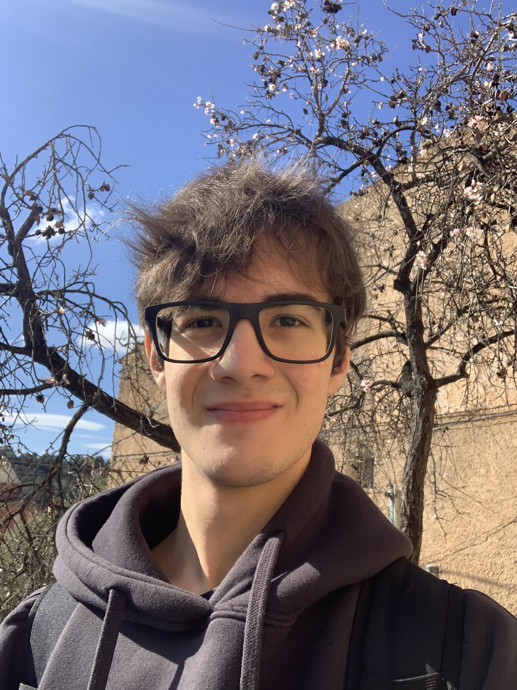

CV
Qui soc?
Hola a tots!, el meu nom és Joel Espinós Ruiz, alumne del primer curs de DAW i futur desenvolupador web.
Soc un apassionat en el món de la informàtica tant en l'àmbit del Software com el Hardware, sempre m'interessa aprendre nous coneixements i posar-los en pràctica.
Em defineixo com una persona treballadora, responsable i detallista, m'agrada esforçar-me al màxim per obtenir resultats perfectes en els meus treballs.
Vaig començar estudiant Sistemes Microinformàtics interessat per conèixer com funciona un equip informàtic, amb el temps em vaig començar a interessar en el món del Software i el desenvolupament web.
A continuació els llenguatges que estic aprenent i els meus estudis acadèmics.
Llenguatges

HTML

CSS

Java
MySQL

PHP
Estudis Acadèmics
| Nom | Institució | Ubicació | Període |
|---|---|---|---|
| Educació Secundaria Obligatoria | INS L'Olivera | La Granadella | 2018 - 2022 |
| CFGM - Sistemes Microinformàtics i Xarxes | IES La Caparrella | Lleida | 2022 - 2024 |
| CFGS - Desenvolupament d'Aplicacions Web | IES La Caparrella | Lleida | 2024 - Actualitat |